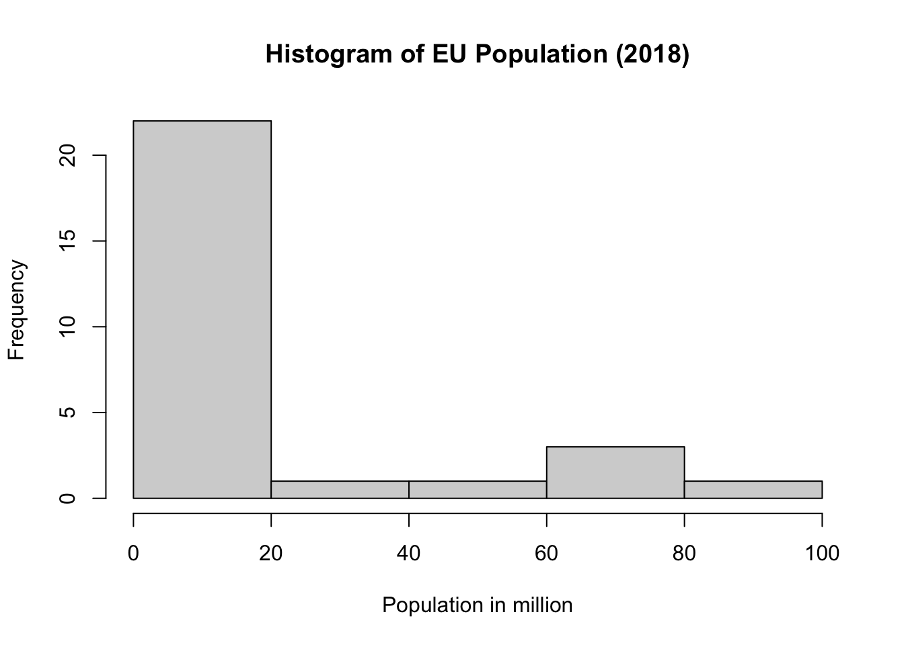
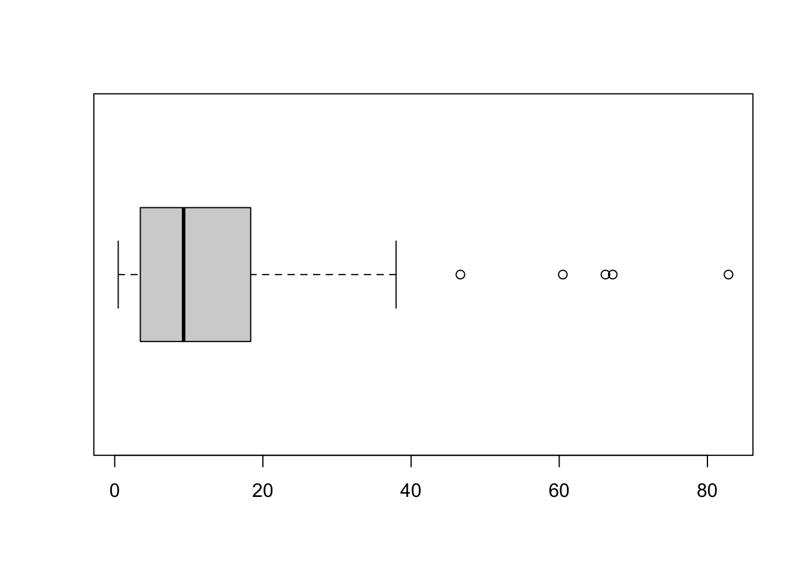

library(readxl)
EU <- read_excel("EU.xlsx", sheet="Sheet1")Week 2
Self-Reflection Questions – Group Work
- Why is it good practice to always use an RScript, rather than simply entering your commands into the console in R?
- Give an example of an unordered factor variable and an ordered one.
- Why are descriptive statistics useful?
- Give an example of a situation where you would need to transform a character variable into a factor variable.
- Why should you always create a new variable, instead of overwriting an existing one?1
I do not usually provide answers to these questions, as I am expecting you to either attend the seminar, or – in case you cannot make it – to contact me for advice or to share notes with another student. But I have nonetheless put this document together, so that you get an idea about my expectation horizon for answering these. Please bear this in mind in weeks to come.
 Answers to Self-Reflection Questions (available from October 15)
Answers to Self-Reflection Questions (available from October 15)
Please stop here and don’t go beyond this point until we have compared notes on your answers.
Data Manipulation in R
Opening your Data Set
We are now ready to open a data set in R - where it is called a “data frame”. For this, we create a new object EU, and ask R to read “Sheet 1”” of the Excel file “EU.xlsx” which we placed in the working directory earlier
We can now use our data in R!
Loading the Data Set
Please do not use the “Import Dataset” button in the Environment, but do this properly, manually. We sometimes need to set options for importing data sets, and the “pointy, clicky” approach won’t be able to offer you what you need.
Viewing the Data
Unless you have been cheeky and opened the file in Excel to have a look, you have no idea yet, what the data look like. So it’s a good idea to view the data frame before doing anything with it. You can use the View() command to see the data frame:
View(EU)If you only want to see the first 6 observations of each variable, use the head() command:
head(EU)# A tibble: 6 × 5
country pop18 access area GDP_2015
<chr> <dbl> <dbl> <dbl> <dbl>
1 Belgium 11413058 1951 30280 4.66e11
2 Bulgaria 7050034 2007 108560 1.22e11
3 Czechia 10610055 2004 77230 3.19e11
4 Denmark 5781190 1973 42430 2.46e11
5 Germany 82850000 1951 348540 3.60e12
6 Estonia 1319133 2004 42390 3.51e10If you simply want to know the variable names in the data frame, type:
names(EU)[1] "country" "pop18" "access" "area" "GDP_2015"The next one is a very important command, because it reveals not only the variable names and their first few observations, but also the nature of each variable (numerical, character, etc.). It is the str() command, where “str” stands for structure:
str(EU)tibble [28 × 5] (S3: tbl_df/tbl/data.frame)
$ country : chr [1:28] "Belgium" "Bulgaria" "Czechia" "Denmark" ...
$ pop18 : num [1:28] 11413058 7050034 10610055 5781190 82850000 ...
$ access : num [1:28] 1951 2007 2004 1973 1951 ...
$ area : num [1:28] 30280 108560 77230 42430 348540 ...
$ GDP_2015: num [1:28] 4.66e+11 1.22e+11 3.19e+11 2.46e+11 3.60e+12 ...You can see that R has recognised most variables as numerical, one is displayed as a character variable. This is appropriate for some variables, such as pop18, but not for the ordinal variable access which is ordinal. We need to recode it, and all other variables we are unhappy with.
Variable Types in R
R distinguishes between a number of different variable types and here is a broad overview of them. This will help you in deciding which descriptive statistics to calculate, or into which variable type you need to recode (next step) to achieve what you want. There are two general types:
numeric– numberscharacter(also called string) – letters
Within numeric we can distinguish between the following:
factor- nominalordered factor- ordinalinteger- numeric, but only “whole” numbers (discrete)numeric- any number (interval or ratio)
Numerical variables are already in the data set, we have to attend to nominal and ordinal variables.
Nominal Variables
In terms of the variable types we encountered in the lecture this week, the country name is a nominal variable. So we need to tell R to turn this into a factor variable. We do this as follows:
EU$country = factor(EU$country)Ordinal Variables
As mentioned above, the variable access should be ordinal, and therefore has to be turned into an ordered factor. The command which follows is almost identical to producing a factor variable, only that we add the option ordered = TRUE at the end:
EU$access_fac = factor(EU$access, ordered = TRUE)If you are familiar with European Studies, you will know that each accession wave has got a particular name. The 1973 enlargement, for example, is called the “First Enlargement”, the 1981 wave the Mediterranean Enlargement, and so forth. Let us create a new variable which uses these names instead of the years.
This process is a little more involved, and requires a new package to be installed and loaded: dplyr. This package is part of the so-called tidyverse which is a suite of packages designed to make working with R simpler and commands shorter. You can install all of them by calling install.packages("tidyverse"). We then load the tidyverse with:
library(tidyverse)The command which follows takes a little explaining. We start by stating the dataframe we wish to assign the result to, EU. Then we name the data frame that contains the data we wish to manipulate, here also EU. The symbol which follows, \%>\%, reads as “and then”, and is called a “pipe”. So we take the data frame EU “and then” carry out a function called mutate. It creates a new variable called wave by recoding the variable access_fac. The command then specifies all categories of the “old” variable access_fac and what their respective values in the “new” variable wave are going to be. The categories in each are set in quotation marks, as they are factor / character categories.
EU <- EU %>%
mutate(wave = recode(access_fac, '1951'="Founding",
'1973'= "First",
'1981'= "Mediterranean",
'1986' = "Mediterranean",
'1995' = "Cold War",
'2004' = "Eastern",
'2007' = "Eastern",
'2013' = "Balkans"))Please note that some colleagues in the department object to the use of the tidyverse as a “dialect” of R, and require you to use base R in their modules. However, on this module I am still using the tidyverse, as:
- my textbook, which is going to be the main textbook for this module from 2026, uses the
tidyverse, and I think it is pedagogically wrong to divert from the main text in my seminars - I do not think it makes sense to exclude one of currently 22,505 packages2
GGPLOT2which is part of thetidyversesimplifies code for generating figures significantly and will do for all but the most specific requirements- a lot of support on stackexchange is geared toward the
tidyverseas a lot of US-based data scientists work with this package, and so you will find it easier to solve problems
But to keep everybody happy, I am providing the base R code whenever possible in a collapsible section like this one:
Base R Solution
EU$wave <- NA
EU$wave[EU$access_fac=='1951'] <- "Founding"
EU$wave[EU$access_fac=='1973'] <- "First"
EU$wave[EU$access_fac=='1981'] <- "Mediterranean"
EU$wave[EU$access_fac=='1986'] <- "Mediterranean"
EU$wave[EU$access_fac=='1995'] <- "Cold War"
EU$wave[EU$access_fac=='2004'] <- "Eastern"
EU$wave[EU$access_fac=='2007'] <- "Eastern"
EU$wave[EU$access_fac=='2013'] <- "Balkans"
EU$wave <- factor(EU$wave, ordered = TRUE)wave in the EU data set. We then create new values , for example Founding in the variable EU$wave for the condition (this is what the square brackets [ ] do) that the variable access_fac in the EU data set, equals a specific value. For Founding this is is 1951. The last step is to turn the wave variable into an ordered factor.
But back to the recoding exercise itself. Please note that the original variable access_fac was already an ordered factor. Therefore, R (or the mutate function to be precise) also returns wave as an ordered factor. Had access_fac been an unordered factor (aka nominal variable), wave would also have been an unorderd factor. You can specify in an option to the mutate function whether you want the factor to be ordered or not:
EU <- EU %>%
mutate(wave = recode(access_fac, '1951'="Founding",
'1973'= "First",
'1981'= "Mediterranean",
'1986' = "Mediterranean",
'1995' = "Cold War",
'2004' = "Eastern",
'2007' = "Eastern",
'2013' = "Balkans"), ordered=TRUE)access only had a handful of numbers, and it turned out that each numerical value of this variable turned into a category in the new one. But often you have to recode variables of a more continuous nature into categories. Suppose, for example, we have the variable age which contains the age of respondents in a survey. If we wanted to recode this into categories such as 20-25, 26-35, etc., it would be tedious to assign a category to each individual value of age. This is where the cut() function comes in handy, as it literally cuts up a variable into chunks at the points we specify. Let’s apply this to the access variable.
Again, we use the mutate function, this time naming our new variable wave1 (so as not to overwrite the wave variable we created with the recode() function). The cut() function splits a numeric variable into intervals using the breaks we specify in the function. Importantly, these intervals are left-open and right-closed. This means that each interval includes its upper boundary, but not the lower one. This sounds complicated, so let me give you an example. If, for example, we called
cut(x, breaks = c(10, 20, 30))then the first interval would start at 10 and include all values greater than 10 and up to and including 20. The next interval would contain all values that are larger than 20 and up to and including 30.
When we apply this to our access variable, we therefore need to specify the breaks as follows:
cut(access, breaks=c(1950, 1951, 1973, 1986, 1995, 2007, 2013))The first category (Founding) thus contains all years up to and including 1951, the next category (First), all years larger than 1951 and up to and including 1973, and so forth. Having created these categories (or levels in R terminology), we can then label them accordingly with labels.
EU <- EU %>%
mutate(wave1=cut(access,
breaks=c(1950, 1951, 1973, 1986, 1995, 2007, 2013),
labels=c("Founding","First",
"Mediterranean",
"Cold War",
"Eastern",
"Balkans"))) levels(EU$wave)[1] "Founding" "First" "Mediterranean" "Cold War"
[5] "Eastern" "Balkans" Base R Solution
EU$wave <- cut(EU$access,
breaks=c(1950, 1951, 1973, 1986, 1995, 2007, 2013),
labels=c("Founding","First",
"Mediterranean",
"Cold War",
"Eastern",
"Balkans"))Recoding a Factor Variable
Recoding Ordered Factor Variables
Binary Dummy
Very often in political science we have yes/no scenarios, such as democracy yes or no, civil war, yes or no, etc. To analyse these scenarios, we can create so-called “dummy variables”. In the present example, let’s specify for each country whether it has been a founding member of the EU. It is a factor variable and so we do could do this exactly the same way as our initial recoding of the wave variable above:
EU <- EU %>%
mutate(founding = recode(access_fac, '1951'="Yes",
'1973' = "No",
'1981' = "No",
'1986' = "No",
'1995' = "No",
'2004' = "No",
'2007' = "No",
'2013' = "No"))There is a much shorter way to do this, however, and shorter is always preferred in coding so long as it leads to the same result. We can apply the ifelse() function which follows the rationale: ifelse('condition', 'if condition met, then', 'otherwise'). Here, if access_fac=="1951" we want to assign the value "Yes", if not "No":
EU <- EU %>%
mutate(founding = factor(ifelse(access_fac=="1951", "Yes", "No"),
levels =c("Yes", "No")))Base R Solution
Using ifelse, this is very similar, only the pipe disappears:
EU$founding <- factor(ifelse(EU$access_fac=="1951", "Yes", "No"),
levels =c("Yes", "No"))Sub-Setting Data
When we start analysing data, we rarely need all data at the same time. We might not need some variables, at all, for example, or we only want to work with certain observations, such as those countries in the “founding” wave. In these cases, we can subset the data. I will show you some examples of subsetting now.
By Variable
If you are sure you won’t need a variable (remember, there is no back button), you can simply drop (i.e. delete) it. Let’s do this with the area variable:
EU$area <- NULLIf we are dropping multiple variables, we can either perform this operation each time, or use another command which allows us to operate with multiple variables at the same time. The select() command comes from the tidyverse package and specifies which variables we wish to keep:
EU_pop <- select(EU, country, pop18, access_fac, founding)This creates a new data frame called EU_pop containing only the variables country, pop18, access_fac, and founding.
Base R Solution
The package documentation offers some basic instructions how to convert the tidyverse (or dyplyr, to be precise) code into base R. But here is the solution for the previous code chunk:
EU_pop <- subset(EU, country, pop18, access_fac, founding)We can, however, use the same command and tell R which variables to drop by adding a minus sign in from of the variables we want to delete. The following command produces exactly the same result as the one before:
EU_pop1 <- select(EU, -access, -GDP_2015)By Observation
Instead of dropping and keeping variables, we can do the same thing to individual observations. Here, we use the slice() command (like a cake) and specify which slices we want to drop or keep. For example to drop the Benelux countries we would delete observations 1, 16 and 19:
EU_nobenelux <- slice(EU, -1, -16, -19)Base R Solution
EU_pop <- EU[c(-1, -16, -19),]Alternatively, if we were only interested in Benelux countries we would subset to only those observations:
EU_benelux <- slice(EU, 1, 16, 19)Base R Solution
EU_pop <- EU[c(1, 16, 19),]Keep if a variable has a certain value
One of the most useful commands is filter(), as it allows us to keep all observations for which the value of a variable is of a particular number. For example if we wanted to conduct an analysis with all countries which have a population in excess of 10 million we could subset by:
EU_pop_large <- filter(EU, pop18 > 10000000)Base R Solution
EU_pop_large <- subset(EU, pop18 > 10000000)Here is a list of some operators you can use for this purpose:
| Operator | Description |
|---|---|
| < | less than |
| <= | less than or equal to |
| > | greater than |
| >= | greater than or equal to |
| == | exactly equal to |
| != | not equal to |
| !x | Not x |
| x | y | x OR y |
| x & y | x AND y |
Subsetting Data
Ordering Data
The data set in its original state is purposely not ordered by any criterion, such as alphabetical order of countries, etc. But we can use R to do exactly that. Let us work with a subset containing only three variables:
EU_subset <- select(EU, country, pop18, access)It would be lovely if the command for ordering data would be called order(), but it is called arrange()3. Let’s order countries by ascending population in a new data frame called eu_order:
eu_order <- arrange(EU_subset, pop18)Base R Solution
eu_order <- EU_subset[order(EU_subset$pop18),]We can now display the first 10 rows with the following command:
eu_order[1:10,]# A tibble: 10 × 3
country pop18 access
<fct> <dbl> <dbl>
1 Malta 475701 2004
2 Luxembourg 602005 1951
3 Cyprus 864236 2004
4 Estonia 1319133 2004
5 Latvia 1934379 2004
6 Slovenia 2066880 2004
7 Lithuania 2808901 2004
8 Croatia 4105493 2013
9 Ireland 4838259 1973
10 Slovakia 5443120 2004The content in the brackets refers to the rows (before the comma), and to the columns (after the comma). As we only want certain rows and displaying all variables, I have left the space after the comma blank.
We can do the same thing in descending order by calling:
eu_order <- arrange(EU_subset, desc(pop18))
eu_order[1:10,]# A tibble: 10 × 3
country pop18 access
<fct> <dbl> <dbl>
1 Germany 82850000 1951
2 France 67221943 1951
3 United Kingdom 66238007 1973
4 Italy 60483973 1951
5 Spain 46659302 1986
6 Poland 37976687 2004
7 Romania 19523621 2007
8 Netherlands 17181084 1951
9 Belgium 11413058 1951
10 Greece 10738868 1981Base R Solution
eu_order <- EU_subset[order(desc(EU_subset$pop18)),]A neat feature of R is that it allows us to order observations by more than one variable. So for example, we could order them by ascending accession wave first, and then by ascending population in 2018 as follows:
eu_order <- arrange(EU_subset, access, pop18)
eu_order[1:10,]# A tibble: 10 × 3
country pop18 access
<fct> <dbl> <dbl>
1 Luxembourg 602005 1951
2 Belgium 11413058 1951
3 Netherlands 17181084 1951
4 Italy 60483973 1951
5 France 67221943 1951
6 Germany 82850000 1951
7 Ireland 4838259 1973
8 Denmark 5781190 1973
9 United Kingdom 66238007 1973
10 Greece 10738868 1981Base R Solution
eu_order <- EU_subset[order(EU_subset$access,EU_subset$pop18),]
# or slightly shorter
eu_order <- EU_subset[order(with(EU_subset, access,pop18)),]Grouping Data
Looking at the last example, a question that might spring up is in which accession wave the joining countries brought the largest population increase on average to the EU. We can calculate summary statistics for a particular group by, well, grouping them. The first step is to group data into rows with the same value:
eu_access <- group_by(EU_subset, access)By the way: whenever you have grouped anything, and finished analysing data in this grouped version it is essential that you ungroup the data afterwards, so that you don’t unintentionally keep using the groups:
ungroup(EU_subset)# A tibble: 28 × 3
country pop18 access
<fct> <dbl> <dbl>
1 Belgium 11413058 1951
2 Bulgaria 7050034 2007
3 Czechia 10610055 2004
4 Denmark 5781190 1973
5 Germany 82850000 1951
6 Estonia 1319133 2004
7 Ireland 4838259 1973
8 Greece 10738868 1981
9 Spain 46659302 1986
10 France 67221943 1951
# ℹ 18 more rowsBut let’s calculate the average population size per accession wave in an elegant command which combines multiple steps by using pipes:
eu_popaccess <- EU_subset %>%
group_by(access) %>%
summarise(avg = mean(pop18))
eu_popaccess# A tibble: 8 × 2
access avg
<dbl> <dbl>
1 1951 39958677.
2 1973 25619152
3 1981 10738868
4 1986 28475164.
5 1995 8151880.
6 2004 7327746.
7 2007 13286828.
8 2013 4105493 Base R Solution
eu_popaccess1 <- aggregate(pop18 ~ access,
data = EU_subset,
FUN = mean )You now see a new variable called avg which contains the average population increase for each wave. In which wave did the joining countries have the largest population on average?
Combining Ordering and Grouping Data
The question was easy to answer here, as we only have a few accession waves. It starts to get unwieldy though, the more groups we have, but we can let R do the job by combining first grouping, and then ordering. So we take the grouped data frame eu_popaccess and order it by descending avg:
eu_popaccess_order <- arrange(eu_popaccess, desc(avg))
eu_popaccess_order# A tibble: 8 × 2
access avg
<dbl> <dbl>
1 1951 39958677.
2 1986 28475164.
3 1973 25619152
4 2007 13286828.
5 1981 10738868
6 1995 8151880.
7 2004 7327746.
8 2013 4105493 Base R Solution
eu_popaccess_order <- eu_popaccess[order(desc(eu_popaccess$avg)),]Descriptive Statistics
We have covered quite a large number of descriptive statistics, so far. These are:
- Mean
- Median
- Mode
- Standard Deviation
- Variance
- Quartiles and Percentiles
- Range
- Interquartile Range
Use the app below (it might take a moment to load, as it is a web-based application) to evaluate how the mean, median, and mode influence the shape of a distribution. Reflect first on how a new value will alter the distribution before carrying out the change.
Descriptive statistics are a lot of effort to calculate by hand, especially for larger data sets, but R can do these with a few intuitive commands. First up is the mean.
mean(EU$pop18)[1] 18311106Then the median:
median(EU$pop18)[1] 9300319You can get information on the quartiles (remember that the median is the second quartile), the mean, as well as the minimum and maximum through one, simple command:
summary(EU$pop18) Min. 1st Qu. Median Mean 3rd Qu. Max.
475701 3781345 9300319 18311106 17766718 82850000 If you want a specific percentile, say the 10\(^\text{th}\), you can use the quantile() function:
quantile(EU$pop18, p=0.1) 10%
1182664 And this brings us neatly to measures of variability. Next up is the range; you can either calculate this with two commands by finding out the minimum and maximum separately, or just ask R to give you both values straight away:
min(EU$pop18)[1] 475701max(EU$pop18)[1] 82850000range(EU$pop18)[1] 475701 82850000The stadard deviation is rather long-winded to calculate by hand, but the R command is short and sweet:
sd(EU$pop18)[1] 23787945If you want to see how the mean and the standard deviation change a distribution, use the sliders below. Reflect first on how a new value will alter the distribution before carrying out the change.
As you know, the variance is the squared standard deviation, but you can calculate it with its own command in R, too:
var(EU$pop18)[1] 5.658663e+14Descriptive Statistics
Now that you have all the relevant tools at hand, complete the following tasks:
- Generate descriptive statistics for 3 of our variables.
- Recode the variable ‘GDP_2015’ into a ordered factor called ‘gdp_level’ with three levels called “low”, “medium”, and “high” with cut-off points of your own choosing.
- Produce a tabulation for ‘gdp_level’.
Graphs
R is probably the most powerful statistics programme for creating graphs. As this is an introductory level module, and we only have so much time available in the seminars, I will only be able to introduce you to the most commonly used ones; in the first instance histograms and boxplots. I will then introduce you to the package ggplot2 which is simply the best invention since sliced bread, as it gives you pretty much endless optionality in customising graphs to show exactly what you want.
Whenever you produce a graph and you use it in an essay, your dissertation, or article, it is crucial that the graph is able to communicate its message independently from the text. So, a reader should be able to understand the graph and be able to appreciate fully its message without having to read the text. In a similar fashion, the text should always be written in such a way that a reader is able to understand it without having to look at the graph. This is a principle which equally applies to tables (more on this on PO12Q). If you do not follow this principle in the assessments on my modules, you will be marked down.
Chapter 4 in “The Visual Display of Quantitative Information” by Tufte (2001) is on the reading list as an essential item, but there are some more principles he sets out at the start of the book (p. 13) which are worthwhile repeating here:
Excellence in statistical graphics consists of complex ideas communicated with clarity, precision, and efficiency. Graphical displays should
- show the data
- induce the viewer to think about the substance rather than about methodology, graphic design, the technology of graphic production, or something else
- avoid distorting what the data have to say
- present many numbers in a small space
- make large data sets coherent
- encourage the eye to compare different pieces of data
- reveal the data at several levels of detail, from a broad overview to the fine structure
- serve a reasonably clear purpose: description, exploration, tabulation, or decoration
- be closely integrated with the statistical and verbal descriptions of a data set.
Graphics reveal data. Indeed graphics can be more precise and revealing than conventional statistical computations.
Basic Graphs
Let’s start with a histogram of the variable pop18. The range of the pop18 variable is about 82 million - this is rather unwieldy to imagine and also to put onto axes of graphs, as they would mostly consist of zeros. So let’s express the population of each countries in million instead:
EU$popmio <- EU$pop18/1000000We can now produce a histogram. Before doing this, it is sensible to think about the number of bars we want in the histogram. The smallest country has just shy of 500,000 inhabitants, whereas the largest has over 82 million. So, I would like the x-axis to run from zero to 100 (million) and divide this into 5 bars. Accordingly, we are introducing 4 breaks on the x-axis with the following command:
hist(EU$popmio, breaks = 4)This is certainly a histogram, but it does not conform to the principle of graphs that they should be able to communicate their message independently, yet. Take the label of the x-axis, for example, what does EU$popmio mean? You and I know, but somebody who doesn’t know R language wouldn’t. We can tell R to adjust the axis label, as well as the main title of the histogram as follows:
hist(EU$popmio, breaks = 4,
xlab = "Population in million",
main = "Histogram of EU Population (2018)")

Histograms
This is fine now. Ugly, but fine. I will show you how to do a boxplot next, and then I will take you through the process of making all this look a bit more jazzy. The command for the boxplot is very intuitive. The default in R is to arrange the boxplot vertically. I prefer them horizontally, and you can set this in an equally intuitive option.
boxplot(EU$popmio, horizontal = TRUE)

You will recognise the descriptives we calculated earlier with the summary() function:
summary(EU$popmio) Min. 1st Qu. Median Mean 3rd Qu. Max.
0.4757 3.7813 9.3003 18.3111 17.7667 82.8500 Explain the outliers on the right mathematically.
Advanced Graphs
The graphs we have produced so far are functional, but let’s be honest, they wouldn’t win any beauty contests. There is, as mentioned earlier, an amazing package called ggplot2 which changes this dramatically. You have already installed it as a part of the tidyverse. Otherwise, the function would be:
install.packages("ggplot2")We can just load it:
library(ggplot2)The “gg” in ggplot2 stands for “grammar of graphs”. You will be familiar with the term “grammar”” from learning a language already. In this context, we use grammar to build sentences by choosing and arranging a variety different components, such as subjects, verbs and objects. If you know how to do this properly, you can express exactly what you want to say. The grammar of graphs adopts this logic and specifies a number of different components which allow you to create a graph which is able to communicate exactly what you wish to show.
ggplot2 has eight basic grammatical arguments:
| Data Frame | The data you wish to visualize. |
| Aesthetic Mappings | Here you specify how the data are assigned to colour, size, etc. For now, this is the variable for which we want to create a graphical distribution. |
| Geom | Short for "geometry". Use a geom function to represent data points through geometric objects, such as points, lines, etc. Each function returns a layer. |
| Stat | You can include statistical summaries through this, such as smoothing, or regression lines. |
| Position | Position adjustments determine how to arrange geoms that would otherwise occupy the same space. |
| Facets | Facets divide a plot into sub-plots based on the values of one or more discrete variables. |
| Scale | Maps data values to the visual values of an aesthetic. For example female=pink, male=blue. |
| Coordinates | How do the numbers get translated onto the plot? We are not going to look at this on this module. |
I like to think of using these arguments like dressing myself in the morning. The minimum that common decency requires me to wear if I wish to leave the house is some underwear, some trousers, and a top. Depending on how I feel and what the weather is like, I can add more layers, like socks, a jumper, or a scarf. It is exactly the same with ggplot2. As a minimum to produce a plot you need a data frame, the aesthetic mapping and a geom. Once you have produced this minimalistic graph, you can modify it, by adding more components / arguments. As you can imagine the possibilities are almost endless, and we only have time to deal with the minimum here. This is not a problem, however, as most of the other grammatical arguments (Stats, Position, Facets and Scales) generally have sensible defaults.
So how does this work in practice? Let us reproduce the histogram of the age variable. We start by calling ggplot2 and advise the function which data frame we wish to use (EU). In a second step, we add a geometry – in our case geom_histogram. Within the geometry, we need to specify for which variable we wish to create a distribution, or in the language of ggplot2 which variable we wish to map to the geom as our Aesthetic. To produce 5 bars again, we specify a bandwidth of 20 million (this refers to popmio).
ggplot(data = EU) +
geom_histogram(mapping = aes(popmio), binwidth = 20)Annoyingly, ggplot places the axis ticks in the middle of each bar which is WRONG for histograms. They need to align with the boundaries of the bars. We do this by telling R the boundary of the plot:
ggplot(data = EU) +
geom_histogram(mapping = aes(popmio), binwidth = 20,
boundary = 0)This has shifted the ticks to the left, but now R has decided to label the x-axis in steps of 25, whereas our bars have a bandwidth of 20. Once again, we have the variable name on the x-axis, instead of a label which anybody could understand. I also prefer “Frequency” on the y-axis, instead of “Count”. To address both of these concerns, we simply add a layer for each. First up are the axis ticks. Our variable is continuous, so we choose the scale_x_continuous option, and tell R to break the axis up into a sequence which starts with zero, ends at 100 and has steps of 20 in between. In the labs argument we adjust the labelling as intended:
ggplot(data=EU) +
geom_histogram(mapping=aes(popmio), binwidth = 20,
boundary = 0) +
scale_x_continuous(breaks = seq(0, 100, 20)) +
labs(x="Population (in million)", y="Frequency") +
theme_classic()Base R Solution
hist(EU$popmio, breaks = 4,
xlab = "Population (in million)", ylab = "Frequency")
I have also removed the background in line with the principles set out by Tufte (2001, p. 96) by adding theme_classic(). This is it. A graph which can communicate its message independently, and which looks aesthetically pleasing.
In the present case we have the population, so displaying the frequency on the y-axis is sort of sensible, but usually we would be dealing with a sample. Here the count is not very telling and we would be using percentages, instead. Let’s do it!
Even More Advanced Graphs
Unfortunately, there is no easy, default way to do this in R, but necessitates a calculation within the ggplot command. Once more we call ggplot and use the EU data set, and select the geom geom_histogram. Again we specify the binwidth as 20 with a boundary of zero, and put popmio on the x-axis. Now comes the point where we need to do something new, because y is not equivalent to the frequency any more, but should be percentage. To achieve this we advise R to put the density there (which is the relative frequency from the the lecture in week 5), and multiply this density by 100 to get percentage. Nothing has changed on the scaling of the x-axis from the previous plot, so we can copy and paste the scale_x_continuous section, as well as the labelling of the x-axis. In this last step, we now also need to adjust the label of the y-axis, because this has now percentage on it, and not frequency. The result is this:
ggplot(data = EU) +
geom_histogram(binwidth = 20, boundary = 0,
aes(x= popmio,
y = (..count..)/sum(..count..)*100)) +
scale_x_continuous(breaks = seq(0, 100, 20)) +
labs(x="Population (in million)", y="percent") +
theme_classic()Base R Solution
# Create histogram data without plotting
h <- hist(EU$popmio,
breaks = seq(0, 100, by = 20),
plot = FALSE)
# Normalize counts to percentages
h$counts <- h$counts / sum(h$counts) * 100
# Plot histogram
plot(h,
freq = FALSE,
xlab = "Population (in million)",
ylab = "percent",
main = "")
Jazzy Graphs with GGPLOT
Organising Code in the RScript
Now is probably a good time to make you aware of how I have been organising code which runs over several lines. I could also have written the code of the last graph as
ggplot(data = EU) +
geom_histogram(binwidth = 20, boundary = 0, aes(x= popmio, y = (..count..)/sum(..count..)*100)) + scale_x_continuous(breaks = seq(0, 100, 20)) + labs(x="Population", y="percent") + theme_classic()but this would have made it rather difficult to disentangle and to spot the structure of the graph straight away. So it is also a good idea to structure the code in a logical way which allows a reader to understand it as easily as possible. R is very smart in the way it indents the next line after pressing “enter” in an RScript automatically to the appropriate position. You see for example that in
ggplot(data = EU) +
geom_histogram(binwidth = 20, boundary = 0,
aes(x= popmio,
y = (..count..)/sum(..count..)*100)) +
scale_x_continuous(breaks = seq(0, 100, 20)) +
labs(x="Population (in million)", y="percent") +
theme_classic()the aes which belongs to the geom_histogram layer is indented just so it starts flush with the first argument (binwidth) within this layer.
Exercises
Using these commands, and moving beyond with the help of today’s reading, complete the following tasks:
- Produce two base-R graphs of different types (e.g. histogram, bar chart, box-and-whisker plot) for separate variables in the EU data set.
- Produce two
ggplotgraphs of different types (e.g. histogram, bar chart, box-and-whisker plot) for separate variables in the EU data set. Google to find more geoms.
Captions for Tables and Figures in Word
In essays, your dissertation and in articles, you will have to refer to tables and figures in the text. Now, you can do this by writing “the figure below”. But this is not very elegant. Also, what happens if you change the layout and all of a sudden “the figure below” becomes “the figure above”. This not only causes additional work because you have to edit the text and check all references to tables and figures once you are done (which is tedious beyond description), but there is also the risk that you miss one or a few in the process.
MS Word has a nifty function that allows you to insert captions for figures and tables, and then to insert cross-references into the text which get updated automatically before you send the document to the printer. Here is how to do it:
Say, you have a figure inserted into Word. You now click on it, then hover over the bottom right-hand square, and right-click with your mouse. From the resulting context menu you select “Insert Caption”.

This results in the following window:

Select whether the item you want to describe is a figure, or a table. Then make sure you place the caption “below” the item (this is default). Then type your caption into the box at the top, such as “Figure 1: Skewness of Distributions”. Make sure the caption is telling. The reader needs to know from the caption what the figure or table is about. When you click OK, the document looks like this:

Now you start writing the text and come to the point where you refer to the figure in question. Here, all you have to do is to select “Insert” and “Cross-Reference””

and select the following options in the pop-up window:

Your text will then look like this:

You don’t have to worry now about the sequence of numbering any more. If you insert another figure above this one, and insert a cross-reference in the text again, the sequence is automatically updated and our former “Figure 1” becomes “Figure 2”. Tables and figures have separate sequences of numbering.
One last word on the display of data in tables: DO NOT screenshot tables from R and insert them into your presentations. They look ugly and unprofessional. Make the effort and create a proper table, either in Word or Excel and populate it manually with the data from R. The insertion of captions and cross-references is the same as described above.
Exercises
Exploring the ESS – Core Exercises
- Open the ESS9 dataset in R and attach it.
- Identify the variable about “Left-right placement”.
- Check its formatting in the questionnaire: what do 77, 88 and 99 mean?
- What is the level of this variable?
- Summarise it with functions
class,str, andhead - What do these functions return?
- Apply the same steps to the variable about the “European unification:”should go further or already gone too far”.
- Them display the first 20 values of the two variables above
- Check the structure of the ‘table’ function and tabulate the two variables
- Can you see a major difference between them regarding non positive answers (ie outside proposed scale)?
- Consider the function
rm(list=ls())- What function
rmstand for? - How useful can this function be for future exercises?
- What function
- Univariate Statistics and Recoding
- Calculate the two means, using only valid values (check the
meanfunction beforehand) - In Left-right, regroup values, using three different methods:
- recode
- convert to factor format using
as.factor - assign value labels using
levels- 0-1 into “far left”
- 2-3 into “left”,
- 4-6 into “centre”,
- 7-8 into “right”
- 9-10 into “far right”
- Calculate the two means, using only valid values (check the
Exploring the ESS – Going Further
- Using the new, transformed variables:
- Calculate means in the UK only. You may use the
[variable == "value"]subscript - How does this mean compare with the average in Europe? and with France?
- Present the frequencies and means of these three samples in one unique table
- Install and load the
questionrpackage. Use its function ‘freq’ to calculate the same as above, but with percentages. - Compare deviations from the mean in the UK and Germany using the function
abs(absolute value, which means any value with all negative signs deleted) - Compare mean, median, mode, variance and standard deviation in the UK and Germany
- Calculate means in the UK only. You may use the
- Try 3 or more kinds or graphs with these two variables separately, using the most appropriate of original or transformed values. Assess and compare the relevance of each graph
- Tabulate the two variables in original format against each other using table(X,Y). Interpret the output.
- Repeat this with the transformed format: Interpret the output.
- Try the same using
questionr::cprop - Graph the two variables against each other using ‘plot’ (make sure you choose the right versions of the variables). What can you conclude from this graph?
Homework for Week 3
- Finish working through this worksheet.
- Add a note underneath each code chunk in your RScript (by starting the line with
#), translating the code into plain English. - Read the required literature for week 3.
- Work through this week’s flashcards to familiarise yourself with the relevant R functions.
- Find an example for each NEW function and apply it in R to ensure it works.
Glossary
| Term | Description |
|---|---|
| categorical | Describing the qualitative categories of a characteristic, for example different religions |
| constant | A variable which does not vary |
| continuous | Can assume any value within defined measurement boundaries |
| descriptive statistics | Summarise information about the centre and variability of a variable |
| deviation | The deviation \(d\) of an observation \(y_{i}\) from the sample mean \(\bar{y}\) is the difference between them: \(d=y_{i}-\bar{y}\) |
| dichotomous | Can only assume two mutually exclusive, but internally homogeneous qualitative categories |
| discrete | The result of a counting process |
| histogram | Displays through rectangles the frequency with which the values of a continuous variable occur in specific ranges |
| interquartile range | The difference between the 3\(^{\text{rd}}\) and the 1\(^{\text{st}}\) quartiles |
| mean | Is equal to the sum of the observations divided by the number of observations |
| median | Separates the lower half from the upper half of observations |
| mode | Is the most frequently occurring value |
| percentile | In ordered data, the percentile refers to the value of a variable below which a certain proportion of observations falls |
| outlier | Defined as a value larger than the third quartile plus 1.5 times the interquartile range, or the first quartile minus 1.5 times the interquartile range |
| quartile | Divides ordered data into four equal parts and indicates the percentage of observations that falls into the respective quartile and below |
| range | The difference between the largest and the smallest observation |
| standard deviation | The standard deviation s is defined as \[\begin{equation*}s=\sqrt{\frac{\text{sum of squared deviations}}{\text{sample size} -1}}=\sqrt{\frac{\Sigma(y_{i} - \bar{y})^2}{n-1}}\end{equation*}\] |
| variance | Is equal to the squared standard deviation |